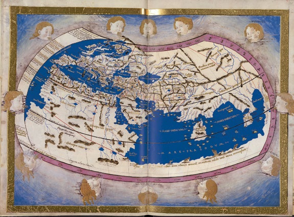
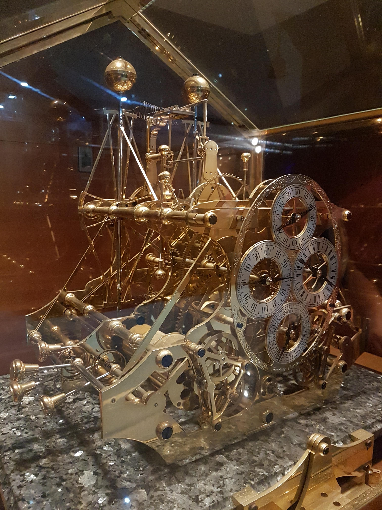

Antigüedad Clásica: Los Primeros Intentos de Cartografía y Geolocalización
Eratóstenes (276-194 a.C.)
Eratóstenes, un matemático y geógrafo griego, es reconocido por ser uno de los primeros en proponer que la Tierra era esférica. Calculó con notable exactitud su circunferencia a partir de observaciones del ángulo de la sombra proyectada por el sol en diferentes lugares. Aunque no utilizó un sistema de coordenadas moderno, su trabajo fue fundamental para el desarrollo posterior de la cartografía.
Ptolomeo (siglo II d.C.)
Uno de los grandes avances en la historia de las coordenadas proviene del trabajo de Claudio Ptolomeo, un astrónomo y geógrafo greco-egipcio que vivió en Alejandría. En su obra "Geographia", Ptolomeo propuso un sistema de localización utilizando un sistema de coordenadas basado en grados.
Dividió la Tierra en líneas horizontales y verticales que representaban latitudes y longitudes, lo cual sentó las bases para el sistema de coordenadas que usamos hoy.

Fuente: IGN
Edad Media y Renacimiento: La Exploración y el Perfeccionamiento del Sistema
Durante la Edad Media, los avances en cartografía se estancaron en Europa debido a la pérdida de gran parte del conocimiento científico grecorromano. Sin embargo, en el mundo islámico, geógrafos como Al-Idrisi en el siglo XII continuaron perfeccionando los mapas utilizando ideas de latitud y longitud basadas en los trabajos de Ptolomeo.
En el Renacimiento (siglo XV y XVI), con el auge de la navegación y las grandes expediciones marítimas, hubo una renovación del interés por la geografía y la exactitud en la medición del mundo.
- Cristóbal Colón y otros exploradores europeos comenzaron a depender de las coordenadas para orientarse en sus viajes transatlánticos. Las cartas náuticas y los mapas comenzaron a incluir líneas de latitud, aunque las longitudes seguían siendo difíciles de medir con exactitud.
Siglo XVII y XVIII: La Medición Precisa de la Longitud
El problema de la longitud fue uno de los grandes desafíos de la navegación de los siglos XVII y XVIII. Si bien la latitud se podía determinar fácilmente observando la altura del Sol o de las estrellas, la longitud era mucho más difícil de calcular debido a la falta de un método preciso para medir el tiempo en alta mar.
El avance clave vino con la invención del cronómetro marino por el relojero inglés John Harrison en el siglo XVIII. Harrison desarrolló un reloj que podía mantener la hora precisa a bordo de un barco, lo que permitió a los marinos medir la longitud con exactitud por primera vez.

Fuente: https://fisicamartin.blogspot.com/
Siglo XIX: El Meridiano de Greenwich y el Establecimiento del Sistema Global
En el siglo XIX, a medida que la navegación y el comercio globales crecieron, se hizo evidente la necesidad de un sistema de referencia unificado para las longitudes.
En 1884, en la Conferencia Internacional del Meridiano celebrada en Washington D.C., se decidió que el Meridiano de Greenwich, en Inglaterra, sería el meridiano cero (longitud 0°). Este meridiano se utilizó como punto de referencia global para medir las longitudes hacia el este y el oeste.
Siglo XX: La Era del Satélite y el GPS
En 1973, se lanzó el proyecto del Global Positioning System (GPS), inicialmente para usos militares. El GPS se basa en una red de satélites que emiten señales precisas de tiempo y ubicación. Estos satélites permiten a los receptores en la Tierra calcular sus coordenadas geográficas exactas, utilizando un proceso de triangulación.
Siglo XXI: Coordenadas de Alta Exactitud y Nuevas Tecnologías
En el siglo XXI, la precisión en la medición de coordenadas ha mejorado aún más gracias a la evolución del GNSS (Sistemas Globales de Navegación por Satélite), que incluyen no solo el GPS, sino también otros sistemas como el GLONASS ruso, el Galileo europeo y el BeiDou chino.
Hoy en día, estas tecnologías permiten una precisión submétrica o incluso milimétrica, lo que es crucial para aplicaciones avanzadas como la conducción autónoma, la agricultura de precisión y los drones.
Selective Availability (SA) fue una técnica utilizada por el gobierno de los Estados Unidos para degradar la precisión de las señales GPS civiles. El objetivo era evitar que personas o países enemigos pudieran utilizar el sistema GPS para actividades militares precisas, como ataques con misiles o movimientos estratégicos. Mientras los usuarios civiles obtenían señales deliberadamente alteradas con un margen de error que podía llegar a ser de hasta 100 metros, los usuarios militares estadounidenses y aliados recibían señales precisas. El 1 de mayo de 2000, el presidente Bill Clinton ordenó la eliminación de esta degradación deliberada de la señal GPS.